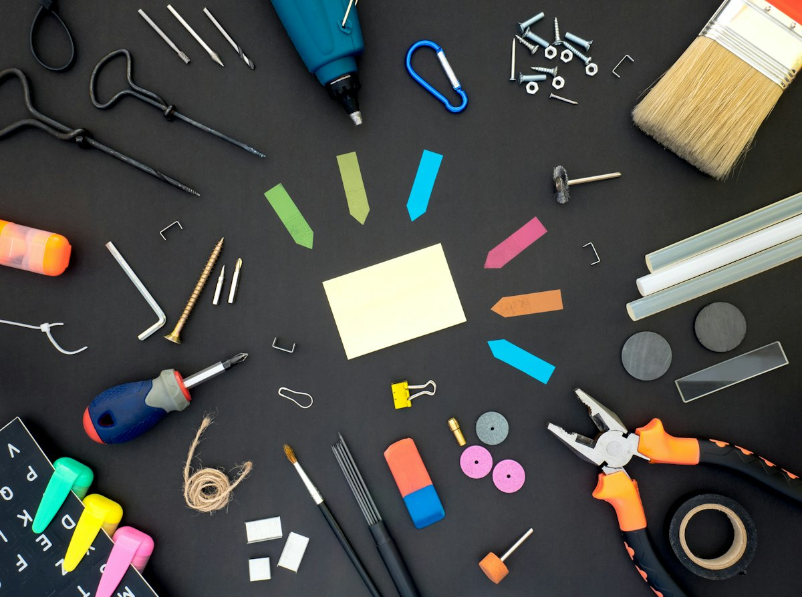

Dörrar
Byte och montering av ytterdörrar, innerdörrar, skjutdörrar och lägenhetsdörrar.
Dörrar, fönster, golv, lister och platsbyggd inredning – monterat med precision och rätt material.
Byggnadssnickeri
En dörr som stänger mjukt, en list som ligger tätt och en garderob som passar perfekt i snedtaket. Bra snickeri märks inte – det bara fungerar, år efter år.
Vi utför byggnadssnickeri i bostäder, lokaler och fastigheter. Vi tar hand om allt från enstaka monteringar till kompletta inredningsprojekt.
Det här hjälper vi till med
Byte och montering av ytterdörrar, innerdörrar, skjutdörrar och lägenhetsdörrar.
Fönsterbyte, karmjustering, smygar och fönsterbänkar.
Trägolv, laminat, parkett och golvavjämning inför läggning.
Golvlister, taklister och foder som ger ett snyggt och tätt avslut.
Garderober, bokhyllor och förvaring anpassade efter rummet.
Montering av stommar, luckor, bänkskivor och tillhörande snickerier.
Montering
Vi mäter noggrant, väljer rätt infästning och tar hänsyn till hur huset rör sig över året. Resultatet blir snickerier som håller formen.


Som privatperson kan du göra ROT-avdrag på arbetskostnaden för reparation, underhåll, om- och tillbyggnad av ditt hem. Vi drar av beloppet direkt på fakturan och sköter ansökan hos Skatteverket.
Så arbetar vi
Ring, sms:a eller fyll i formuläret. Berätta kort vad du behöver hjälp med.
Vi tittar på jobbet på plats och lämnar en tydlig offert utan dolda kostnader.
Vi utför arbetet enligt plan, håller dig uppdaterad och lämnar en städad arbetsplats.
Gemensam genomgång när allt är klart – och vi finns kvar om något behöver justeras.
Gärna. Vi kan köpa in allt material, eller montera det du redan har valt och köpt.
Ja, vi bygger platsbyggd förvaring anpassad efter snedtak, nischer och udda mått.
Ett normalt innerdörrsbyte går ofta på några timmar per dörr, beroende på karm och anslutningar.
Ja, ROT-avdrag gäller arbetskostnaden för snickeriarbeten i ditt hem. Avdraget görs direkt på fakturan.
Ring oss eller begär en kostnadsfri offert – vi återkommer så snart vi kan.